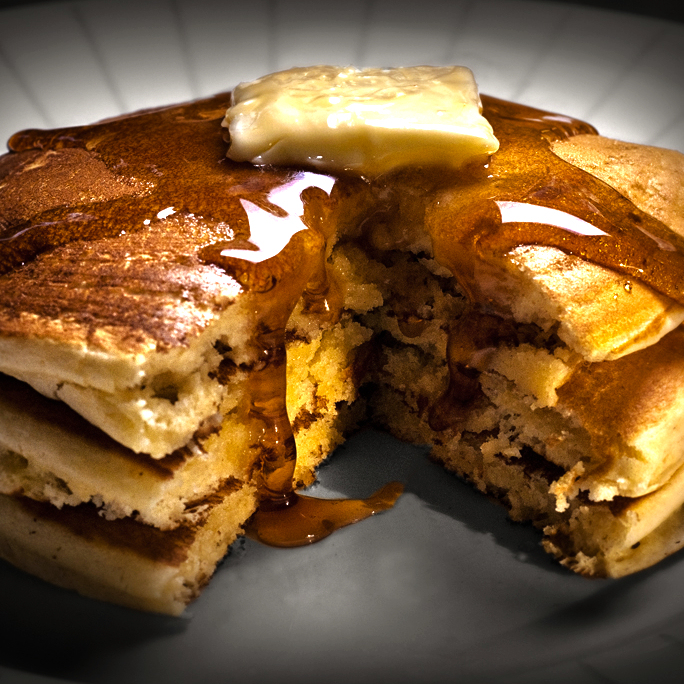

Recent Recipes
-

This Lobster recipe is the perfect romantic meal for that special occassion. Mediteranean taste with a hint of orange pairs perfectly with a classic Riesling.
-

Pancakes from the land of nod. Perfect for a slow-paced sleepy weekend.
-

Extravagance on a budget. This delightful ramen dish delights both the eye and the palette with a supprising blend of creative flavors.
-

Lemon tea served with a twist of sardonic irony. A creative take on an old favorite.